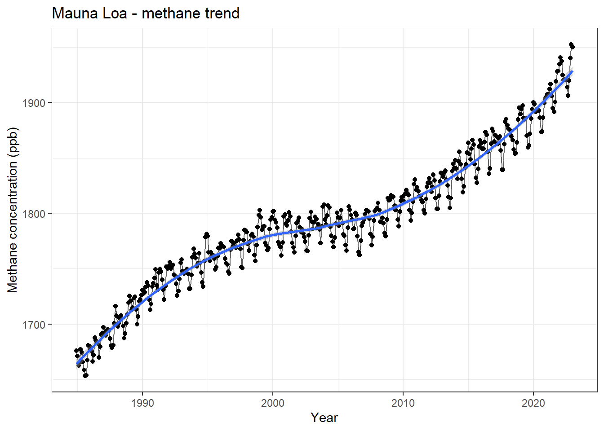
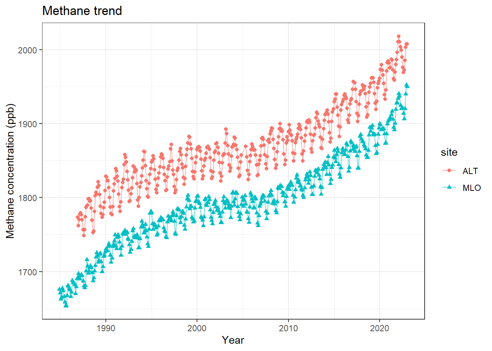

Today we will focus on the practice of importing data - better than last time.
Our framework for the workflow of data visualization is shown in Figure 12.1
Figure 12.1: Tidyverse framework again
Acquiring and importing data is the most complicated part of this course and data visualization in general. This Unit is done now, rather than at the beginning, because of its difficulty and pain - while providing little immediate satisfaction of a cool map or graphic. In my experience, data import and manipulation is 80+% of the work when creating visualizations; it needs to be covered at least nominally in any course on data visualization.
12.1 Load and Install Packages
As always, we should load the packages we need to import the data. There are many specialized data import packages, but tidyverse and sf are a good start and can handle many standard tables and geospatial data files. Remember, you can check to make sure a package is loaded in your R session by checking on the files, plots, and packages panel, clicking on the Packages tab, and scrolling down to tidyverse and sf to make sure they are checked.
Download the Zipped Shapefile shown in the screenshot in Figure 12.2
Figure 12.2: CalEnviroScreen Shapefile Location
By default, downloads are often placed in a Downloads directory, although you may have changed that on your local machine.
You can skip the next step if you directly save the zip file to your working directory.
12.2.2 Move the Zipped Shapefile to the R Working Directory
By default, downloads are often placed in a Downloads directory, although you may have changed that on your local machine. If this occurred in your download, the zipped needs to be either (a) moved to the R working directory or (b) identify the filepath of the default download directory and work with it from there.
For today, I will only show path (a) because it is good data science practice to keep the data in a directory associated with the visualization.
Identify the directory where the zipped shapefile was downloaded. On my machine, this is a Downloads folder which can be accessed through my web browser after the file download is complete; Figure 12.3 shows an example. The name of the file is calenviroscreen40shpf2021shp.zip.
Figure 12.3: Browser download
Identify the R working directory on your machine using the getwd() function.
Move calenviroscreen40shpf2021shp.zip from the default download directory to the R working directory. Either drag it, copy and paste it, or cut and paste it. For Macs - use the Finder tool. For PCs, use File Explorer.
Check your Files, Plots, and Packages panel to see the zipped file is identified by RStudio. See the example in Figure 12.4.
Figure 12.4: Files, Plots, and Packages Panel
If you see the calenviroscreen40shpf2021shp.zip in the directory on your machine, congratulations! You are a winner!
12.2.3 Unzip the data - Two Ways
Although the data is in the right place, it is not directly readable while zipped.
12.2.3.1 Point and Click Unzip
I think the process is basically the same for Mac and PC, but we will identify this in class.
On a PC, right-clicking on a zipped file will bring up a menu that includes an Extract All option. Choosing the Extract All option brings up a pathname to extract the file to. The default is to extract the zip file to a subfolder named after the zip file.
Again, go to the Files, Plots, and Packages panel and check if there is a folder called calenviroscreen40shpf2021shp as shown in Figure 12.5
Figure 12.5: Shapefile folder is in the working directory!
12.2.3.2 Unzip with Code
Same idea. Use the unzip() function to unzip the zipped shapefile folder. We will save it in a separate directory to test if this way works independently of point and click method. The unzip() function needs two arguments - the path of the zipfile =, and the export directory name exdir =.
Warning in unzip(zipfile = "calenviroscreen40shpf2021shp.zip", exdir =
directory): error 1 in extracting from zip file
Check the Files panel. Check for a new CalEJ4 folder; ?fig-panel3 shows how it looks on my machine.
### Import the Shapefile
The sf library is used to import geospatial data. The read_sf() is great at read and identifying the type of spatial file.
Shapefiles are the esri propietary geospatial format and are very common.
The CalEnviroScreen data are in the shapefile format, which is a bunch of individual files organized in a folder directory. In the calenviroscreen40shpf2021shp directory, there are 8 individual files with 8 different file extensions. We can ignore that and just point read_sf() at the directory and it will do the rest. The dsn = argument stands for data source name which can be a directory, file, or a database.
We did this before for Alert, let’s try the successful code using the read_table() function. Note, that when I follow the link, the first line of the dataset says there are 71 header lines.
`geom_smooth()` using method = 'loess' and formula = 'y ~ x'

Figure 12.6: Trend in Methane concentrations (ppb) at Mauna Loa, Hawaii
12.2.6 Advanced data visualization
Now that we have Mauna Loa, I want to add the Alert dataset to it using the code we developed last week. This code downloads the Alert dataset and renames its headers.
Now we can put the datasets together to make a combined visualization. The bind_rows() function from tidyverse let’s us put the datasets take together since they have the same headers. Then we can use the color argument to aes() to get two separate time series as shown in Figure 12.7. I also grouped the data by the shape of the symbol to ensure that the two datasets are distinguishable.
CH4<-bind_rows(ALT.CH4, MLO.CH4)CH4%>%mutate(decimal.Date =(year+month/12))%>%ggplot(aes(x =decimal.Date, y =value, color =site, shape =site))+geom_point()+geom_line(alpha =0.6)+#geom_smooth(se = FALSE) +theme_bw()+labs(x ='Year', y ='Methane concentration (ppb)', title ='Methane trend')

Figure 12.7: Trend in Methane concentrations (ppb) at Mauna Loa, Hawaii and Alert, Canada
12.2.7 Downloading secured zip files
I have not yet found a reliable method to get this to work every time on Macs and PCs. Stay tuned.
An Actions button should appear; ?fig-Action shows where that is. Press the Actions button, select Export All and choose Export to geoJSON.
5. A file named DataRecords.geojson should appear in your default download folder. 6. Move the DataRecords.geojson file to the working directory. 7. Check the Files panel. Is DataRecords.geojson there?
8. Read in the file using read_sf(). The dsn argument can point directly to the file name for this type of file. Assign it a name that incorporates EJI and the state abbreviation.
9. Check the Environment panel. Did it import? 10. Make a visualization - but not a map because projections are wonky?
CA_EJI_raw<-read_sf(dsn ='DataRecords.geojson')%>%filter(rpl_eji>=0)#%>% # unfortunately, this data is in some weird projection that isn't properly identified but might be equal albers conformal conic#st_is_valid(CA_EJI_raw)#st_crs(CA_EJI_raw)CA_EJI<-st_set_geometry(CA_EJI_raw, value =NULL)CA_EJI_raw<-st_set_crs(CA_EJI_raw, '+proj=aea +lat_0=37.5 +lon_0=-96 +lat_1=29.5 +lat_2=45.5 +x_0=0 +y_0=0 +datum=NAD83 +units=m +no_defs +type=crs')
Warning: st_crs<- : replacing crs does not reproject data; use st_transform for
that


 ### Import the Shapefile
### Import the Shapefile 5. A file named DataRecords.geojson should appear in your default download folder. 6. Move the DataRecords.geojson file to the working directory. 7. Check the Files panel. Is DataRecords.geojson there?
5. A file named DataRecords.geojson should appear in your default download folder. 6. Move the DataRecords.geojson file to the working directory. 7. Check the Files panel. Is DataRecords.geojson there?